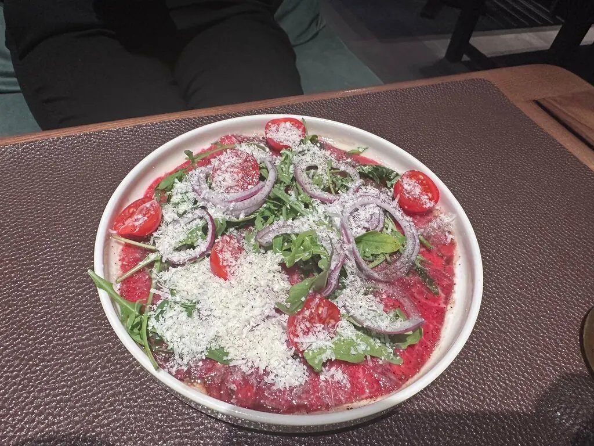
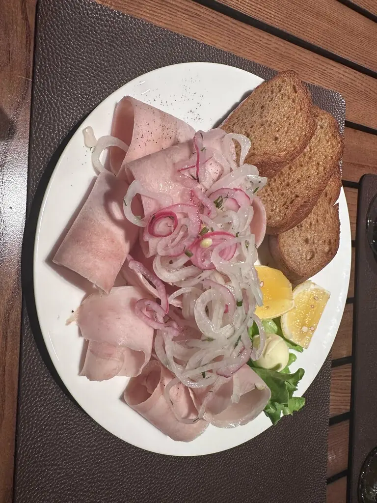
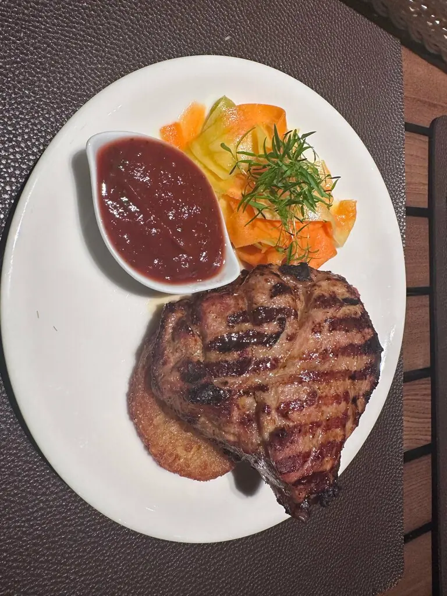

Холод
Килька пряного посола390 ₽
Хе из судака550 ₽

Раковина растёт камера за камерой. Так и ужин: от строганины к стейку на раскалённом камне.


Часть меню с Яндекс Карт и 2ГИС, цены уточняйте у официанта. Бизнес-ланч в будни.
Ресторан с богатой историей, авторскими мясными и рыбными блюдами от шеф-повара и впечатляющей винной картой.Dmitry s
Наутилус не для всех, для особенной аудитории. Стейк с палтусом рекомендую.Ольга Траксель
Очень вкусные стейки. Классная и интересная подача на раскалённом камне.Марина Ликтей